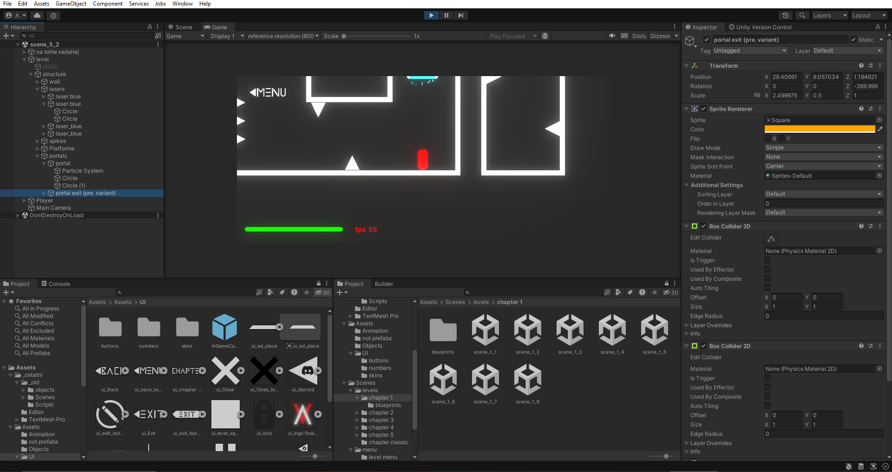

The game is in the development for: X days
Current version: 0.3
HOW WE DO IT
Game engine
We use Unity game engine, which is first choice for many of the new developers or small game studios. Because of an user friendly interface and a big helpfull community. It's also free under some circumstances.
Of course that there are more of us and to work on the same project at the same time we use PLasticSCM which is a cross-platform version control tool for developers
Development
There isn't anything unusual or special from other games develops, its just a usual process of developing.
Most interesting is to see how are the levels for the game made:
- green color is showing optimal way for getting trough level
Or how we keep everything organized:
Beside from that, we have basic tasks like designing and making user interface, making all the animations and effects, programming all the functions and most importantly scripts for player controller.